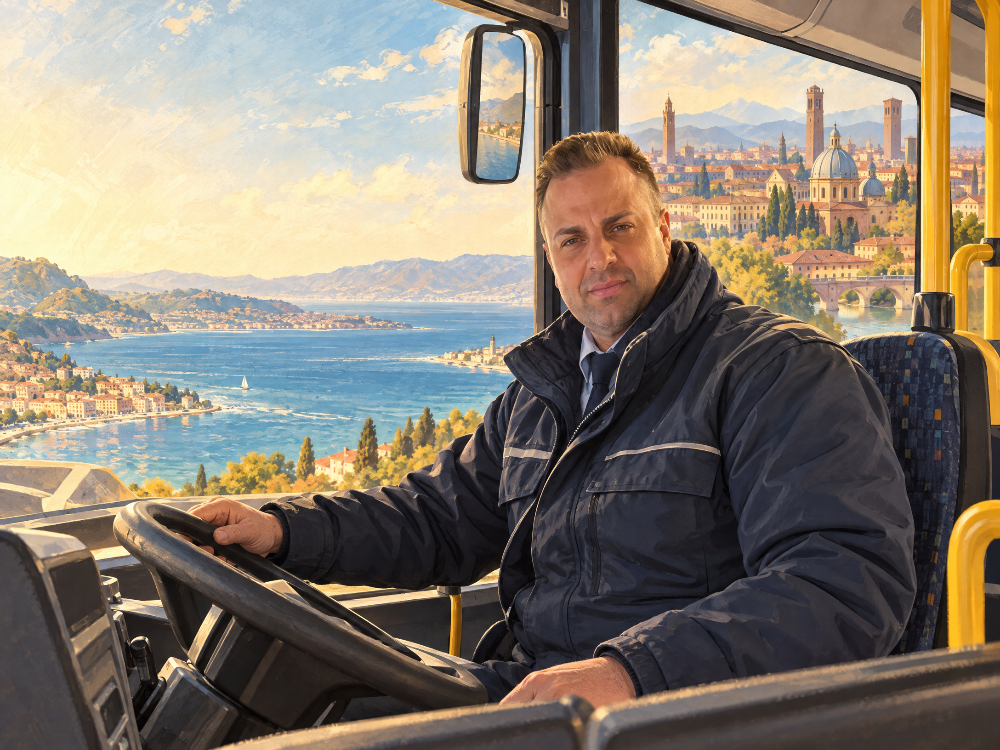

Un viaggio, una fermata alla volta
Da Messina
a Padova.
Sempre in corsa.
Alberto guida autobus, porta con sé la sua città e ha un soprannome che merita una storia: Il Lamantino.

una tratta tutta suaIN MOVIMENTO
Il mare
non si mette
in valigia.
Ci sono città che restano con te, anche quando la strada ti porta altrove.
Per Alberto, Messina è il punto da cui comincia il racconto: una città d’origine, un legame che attraversa la distanza. Non serve avere il mare davanti agli occhi per sapere da dove si viene.
A volte il lavoro
cambia capolinea.
Per Alberto la strada del lavoro è arrivata fino a Padova. Una nuova città, un nuovo paesaggio dal finestrino: il percorso cambia, mentre le radici restano parte del viaggio.
E poi si guidadi linea!
La strada
non sta mai
ferma.
C’è un posto da cui si vede passare la città intera.
È il posto di chi guida. Fermate, incroci, persone che salgono e scendono: fare l’autista vuol dire tenere la rotta, una corsa alla volta.
Il traffico fa il traffico.
L’autista fa il possibile.
Dicono di lui
Il
Lamantino.
Il soprannome c’è. La leggenda sulle sue origini no: non la inventiamo. Ci piace così, con quel suono morbido e una presenza che non ha bisogno di fare rumore.
Fine della corsa?Macché. Prossima fermata.
LAMANTINO✳
Una fermata per un saluto
Fagli un
fischio.
Un messaggio fa sempre strada. Puoi scrivergli direttamente su WhatsApp oppure preparare qui il tuo saluto.
Apri WhatsApp